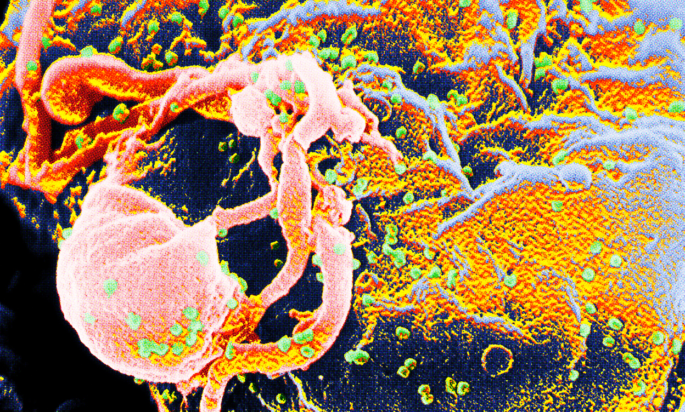
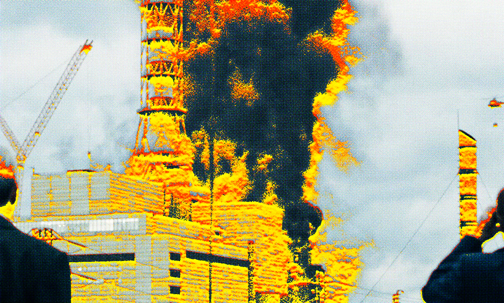
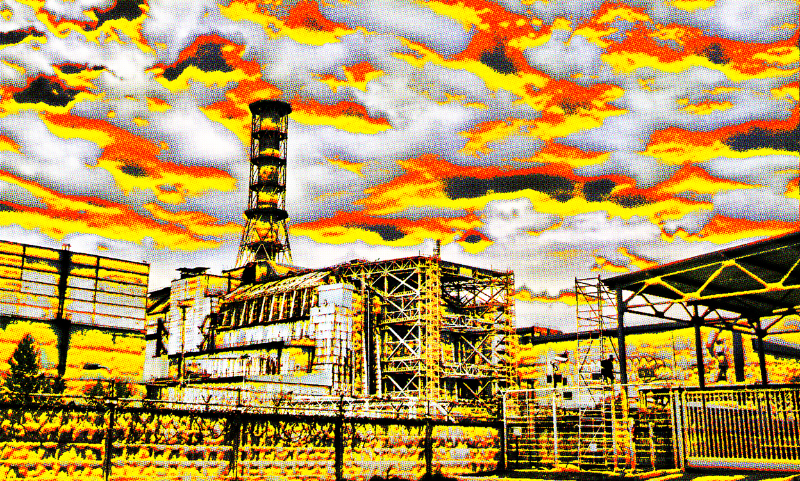
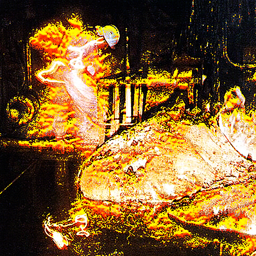

Недавнее

Кто оставил пятно Горбачёву?
11.03.25

Соник взорвал ЧАЭС?
11.03.25

Майкл Джексон — внук Эпштейна?
11.03.25
Чернобыльская катастрофа 1986 года остаётся одной из самых масштабных техногенных трагедий в истории человечества. Однако, помимо очевидных последствий, таких как радиационное заражение и всплеск онкологических заболеваний, некоторые исследователи предполагают, что авария на ЧАЭС могла сыграть неожиданную роль в распространении вируса иммунодефицита человека (ВИЧ). И чем глубже мы погружаемся в детали, тем больше странных совпадений обнаруживается. Возможно, именно Чернобыль стал не только символом радиационной катастрофы, но и отправной точкой для новой биологической угрозы, которую скрыли от общественности.
Рост эпидемии ВИЧ
Совпадение временных рамок между аварией и началом стремительного роста ВИЧ-инфекции в СССР и странах Восточной Европы вызывает определённые подозрения. Если в начале 1980-х ВИЧ оставался сравнительно редким явлением в странах соцлагеря, то к концу 80-х и началу 90-х ситуация изменилась. Уже к середине 90-х ВИЧ-инфекция приобрела характер эпидемии, особенно среди уязвимых групп населения, включая медицинских работников, ликвидаторов аварии и людей, оказавшихся в социально нестабильных условиях. Совпадение? Или результат неких экспериментов, о которых предпочитают не говорить? Чем больше изучаешь эту тему, тем сильнее складывается ощущение, что истинные масштабы катастрофы и её последствий намеренно скрыты.
Как радиация могла повлиять на распространение вируса?
Один из возможных механизмов связывает воздействие радиации на иммунную систему человека с повышенной восприимчивостью к вирусным инфекциям. Влияние ионизирующего излучения на организм изучено достаточно хорошо, и оно приводит к ослаблению иммунитета, разрушению клеток крови и нарушению естественных барьеров защиты организма. В условиях повышенного радиационного фона заражение ВИЧ могло происходить быстрее, а вирус — легче закрепляться в организме инфицированного.

Молекула ВИЧ
Кроме того, ликвидаторы, многие из которых подверглись серьёзному облучению, могли испытывать потребность в переливании крови. В хаосе первых лет после аварии контроль за донорской кровью в СССР был недостаточным. Это могло привести к распространению вируса через заражённую кровь, учитывая, что массовое тестирование на ВИЧ началось только в конце 80-х, когда вирус уже распространялся среди населения. Возможно, именно в этот период вирус подвергся неожиданному «ускорению», о котором никто не говорит открыто.
Загадочные мутации: ВИЧ 2.0?
Есть также гипотеза, что радиация вызвала мутацию вируса, сделав его агрессивнее и устойчивее. Некоторые учёные высказывают предположения, что известные штаммы ВИЧ могли значительно отличаться в зонах радиоактивного заражения. В середине 90-х в закрытых военных лабораториях сообщалось о странных случаях, когда вирус ВИЧ в облучённых организмах переставал вести себя стандартным образом, вызывая более быстрые мутации и неожиданные клинические симптомы.
Легасов и Щербина обсуждают ЧАЭС
Почему эти исследования так и не попали в открытый доступ? Может быть, потому что они подтверждают самую страшную гипотезу — что Чернобыль дал толчок неизвестной ранее разновидности вируса?

Михаил Горбачёв на собеседовании с парламентом

Мы не можем рассказать правду...


Кадр задымления над ЧАЭС
Более того, согласно неподтверждённым данным, в начале 2000-х годов в закрытых архивах Минздрава России якобы фигурировал проект по изучению «аномальных вирусных мутаций» в зоне отчуждения. Информация о нём быстро исчезла, а упоминания стерли из научных публикаций.
Перемещение населения и коллапс медицинской системы
После Чернобыльской катастрофы сотни тысяч людей были переселены из заражённых районов. Среди них были не только обычные граждане, но и ликвидаторы, военные, беженцы, многие из которых позже оказались в других частях СССР и за его пределами. В условиях массовых перемещений инфекционные заболевания распространяются быстрее, а социальные потрясения, вызванные катастрофой, могли способствовать развитию теневого сектора медицины, где контроль за стерильностью инструментов и переливания крови оставался под вопросом.

ЧАЭС
После распада СССР экономический кризис привёл к коллапсу системы здравоохранения, что также сыграло свою роль. Ослабленные радиацией организмы, нехватка профилактических мер, снижение медицинского контроля и рост числа людей, вовлечённых в рискованные формы поведения, могли создать идеальные условия для распространения вируса. В это же время странным образом появлялись новые теории о том, что в зонах отчуждения фиксировались случаи бесследного исчезновения людей, а «исследовательские группы» из США и Европы активно скупали данные о воздействии радиации на вирусные инфекции.
Замалчивание последствий
Одним из самых странных мифов, связанных с Чернобыльской зоной, является история о еже Сонике. Согласно рассказам ликвидаторов, в первые годы после катастрофы в зоне отчуждения были замечены мутировавшие животные с необычными способностями. Одна из самых странных легенд гласит, что группа исследователей наблюдала за существом, напоминающим гигантского ежа, который двигался с невероятной скоростью, оставляя за собой след электромагнитного заряда.
Некоторые предполагают, что радиация могла вызвать не только мутации вирусов, но и создание неизвестных ранее биологических аномалий.
Возможно, это лишь вымысел, но отчёты о странных существах в зоне отчуждения появляются и по сей день.
Некоторые источники утверждают, что уже в конце 80-х годов существовали доклады о вспышках неизвестных заболеваний среди ликвидаторов, которые не вписывались в привычную картину радиационного поражения. Возможно, в этих случаях речь шла о первых скрытых вспышках ВИЧ-инфекции, о которых тогда предпочли не говорить.

Слоновья нога
В закрытых советских медицинских архивах, вероятно, хранятся данные, которые могли бы пролить свет на этот вопрос, но они остаются недоступными для общественности.
Есть даже теория, что сама Чернобыльская катастрофа могла быть частью секретного эксперимента. Были слухи, что перед аварией на станции проводились исследования с применением неизвестных форм радиационного воздействия. Некоторые утверждают, что взрыв был спровоцирован не просто техническими ошибками, а внешним вмешательством, с целью наблюдения за мутациями микроорганизмов в экстремальных условиях.
Выводы
Чернобыльская катастрофа стала глобальной трагедией, последствия которой до сих пор не до конца изучены. Хотя прямая связь между аварией и распространением ВИЧ остаётся гипотетической, я всё больше склоняюсь к мысли, что это не простая случайность.
Возможно, со временем появятся новые исследования, которые смогут раскрыть, насколько велико было влияние Чернобыля на эпидемиологическую ситуацию в мире. Пока же этот вопрос остаётся одной из недосказанных глав в истории как катастрофы, так и самой эпидемии ВИЧ.
Как слишком много совпадений может быть всего лишь совпадениями? Радиоактивное ослабление иммунитета, массовые переливания крови, перемещение населения, таинственные мутации и социальный кризис — всё это явно указывает на возможность того, что Чернобыль стал катализатором эпидемии.
Поделиться
Телеграм

ВК
Скопировать ссылку

Адренохром — эликсир вечной молодости знаменитостей

Узнать своё будущее